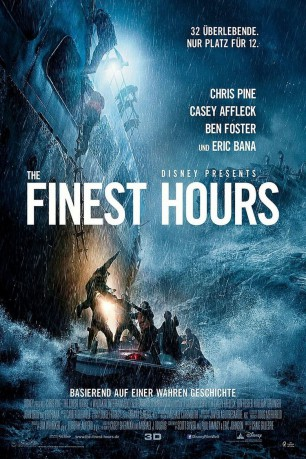

#3917 The Finest Hours
 gesehen am 06.07.2016
gesehen am 06.07.2016
 
 IMDB-Wertung: 6.8 / 10
IMDB-Wertung: 6.8 / 10  Metascore: 0
Metascore: 0 
Am 18. Februar 1952 gerät durch einen starken Wintersturm vor der Küste New Englands der Öltanker SS Fort Mercer in Seenot. Doch noch während die Rettungsmannschaften in Chatham, Massachusetts sich auf ihren Einsatz vorbereiten, entdecken sie auf dem Radar ein weiteres Opfer: die SS Pendleton, ebenfalls ein Öltanker, ist gleichfalls in höchster Not. Und so begibt sich schließlich das Rettungsboot CG-36500 mit seiner Mannschaft um Steuermann Bernard C. Webber auf eine riskante Mission, um die Besatzung der SS Pendleton aus sturmgepeitschter eiskalter See zu bergen. Diese harrt auf dem Heck aus, während Wind und Wasser unablässig an Nerven und Leben zerrt. Vom Land aus sind derweil die Angehörigen dazu gezwungen, hilflos der Rettungsaktion zuzusehen.
Jahr: 2016
Dauer: 117 Minuten
FSK: 12
Land: USA Studio: Walt Disney Studios Motion PicturesTonspuren: DTS - ,
Untertitel: Deutsch, Englisch,
Auflösung: 1080p (1920x800) Größe: 10444 MB
Genre: Action, Thriller, Drama, Geschichte
Regisseur: Craig Gillespie
Drehbuch: Alex Kurtzman
Soundtrack:
Darsteller:
 Chris Pine als Bernie Webber
Chris Pine als Bernie Webber Casey Affleck als Ray Sybert
Casey Affleck als Ray Sybert Ben Foster als Richard Livesey
Ben Foster als Richard Livesey Eric Bana als Daniel Cluff
Eric Bana als Daniel Cluff Holliday Grainger als Miriam Webber
Holliday Grainger als Miriam Webber John Ortiz als Wallace Quirey
John Ortiz als Wallace Quirey Kyle Gallner als Andy Fitzgerald
Kyle Gallner als Andy Fitzgerald John Magaro als Ervin Maske
John Magaro als Ervin Maske Graham McTavish als Frank Fauteux
Graham McTavish als Frank Fauteux Michael Raymond-James als D.A. Brown
Michael Raymond-James als D.A. Brown Beau Knapp als Mel Gouthro
Beau Knapp als Mel Gouthro Josh Stewart als Tchuda Southerland
Josh Stewart als Tchuda Southerland Abraham Benrubi als George 'Tiny' Myers
Abraham Benrubi als George 'Tiny' Myers Keiynan Lonsdale als Eldon Hanan
Keiynan Lonsdale als Eldon Hanan Rachel Brosnahan als Bea Hansen
Rachel Brosnahan als Bea Hansen- Benjamin Koldyke als Donald Bangs
 Matthew Maher als Carl Nickerson
Matthew Maher als Carl Nickerson- Jesse Gabbard als Domingo Garcia
 Alexander Cook als John Stello
Alexander Cook als John Stello Danny Connelly als Dave Ryder
Danny Connelly als Dave Ryder- Angela Hope Smith als Catherine Paine
- Bari Robinson als Another Seaman
- Kate Crowley als Local Townsfolk #1
- Peg Holzemer als Local Townsfolk #4
- Steve Rasetta als Seaman #1
- Jay Street als Seaman #2
- Harley Harrison als Seaman #3
 Kristen Annese als Principal Dancer
Kristen Annese als Principal Dancer John Franchi als Fisherman at Bar
John Franchi als Fisherman at Bar Kate Jurdi als Dancer
Kate Jurdi als Dancer- Ernest Anemone als Medic , uncredited
- Elise Arsenault als Hi Hat Patron , uncredited
- Justin Blanchard als Wayne Wilson - Hi Hat Dancer , uncredited
- Tom Driscoll als Police Officer , uncredited
 Larry Eudene als Pendleton Crew #3 Whistle Blower , uncredited
Larry Eudene als Pendleton Crew #3 Whistle Blower , uncredited- John Gigliotti als U.S. Coast Guard , uncredited
- Robert Glenn als Reporter #2 , uncredited
- Karl carlo Green als Driver / Dancer , uncredited
- Mark Haggett als Party Goer , uncredited
 London Hall als Fisherman's Wife , uncredited
London Hall als Fisherman's Wife , uncredited Bobby Kenney als Townfolk , uncredited
Bobby Kenney als Townfolk , uncredited Roberto Lopez als Pendleton Crew #2 , uncredited
Roberto Lopez als Pendleton Crew #2 , uncredited- Michael Maggiani als Bell Telephone Supervisor , uncredited
- Michael Marchand als Bangs Crew Coast Guard , uncredited
- Tom Mariano als Hi Hat Patron , uncredited
 Peter Morse als Police Officer , uncredited
Peter Morse als Police Officer , uncredited Joseph Oliveira als Medic , uncredited
Joseph Oliveira als Medic , uncredited- Derek Pratt als Hi Hat Dancer , uncredited
- David Pridemore als Seaman , uncredited
 Stew Replogle als Townie , uncredited
Stew Replogle als Townie , uncredited
Datei: X:\2016(A-F)\Finest Hours, The (2016, FSK12, 1920x800).mkv seit 30.06.2016
Festplatte: HD 2016(A-Z)
 Es gibt insgesamt 147 Filme in der Gruppe '2016(A-F)'
Es gibt insgesamt 147 Filme in der Gruppe '2016(A-F)'